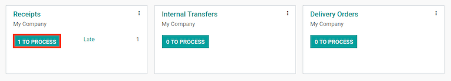
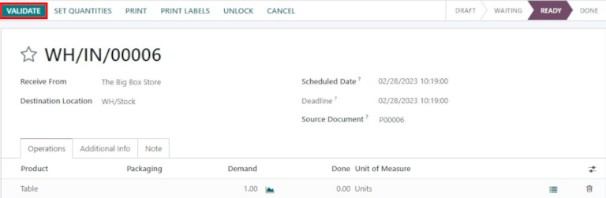
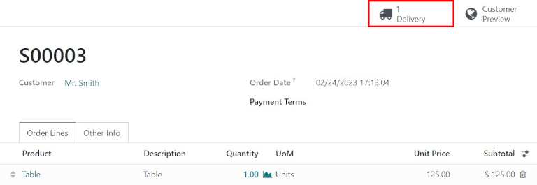

Procesar recepciones y entregas en un paso¶
De manera predeterminada, los envíos entrantes están configurados para que se reciban directamente en las existencias. Por otro lado, los envíos salientes están configurados para entregarse directamente de las existencias al cliente. La configuración predeterminada para los almacenes en Odoo es la recepción y la entrega en un paso.
Nota
Los envíos entrantes y salientes no necesitan configurarse con los mismos pasos. Por ejemplo, puede recibir productos en un paso, pero enviarlos en 3 pasos.
En el siguiente ejemplo, un paso se usará tanto para las recepciones como para las entregas.
Configure el almacén¶
Si el almacén tiene una configuración diferente para las recepciones y envíos, puede cambiarla fácilmente a la configuración en un solo paso.
Vaya a y haga clic en el almacén que desea editar. Luego, en la pestaña Configuración del almacén, en la sección Envíos, seleccione Recibir bienes directamente (1 paso) para los Envíos entrantes o Entregar bienes directamente (1 paso) para los Envíos salientes.

Recibir bienes directamente (1 paso)¶
Crear una orden de compra¶
En el tablero de la aplicación principal , comience creando una nueva cotización haciendo clic en Nuevo. Luego, seleccione (o cree) un Proveedor desde el menú desplegable del menú, agregue un Producto almacenable a las líneas de orden, y haga clic en Confirmar orden para finalizar la cotización y quede como una nueva orden de compra.
Aparecerá un botón inteligente de Recepción en la esquina superior derecha del formulario de la orden de compra. Haga clic sobre él para ver el recibo asociado para la orden de compra.

Truco
También puede encontrar los recibos de las órdenes de compra en la aplicación . En la Vista general del tablero, haga clic en el botón # Por procesar en la tarjeta kanban de Recepción.
Procesar la recepción¶
Al ver el recibo (asociado con la orden de compra anterior), haga clic en Validar para completar el recibo.
Nota
Si tiene activadas las Ubicaciones de almacenamiento, al hacer clic en el icono de detalles ‚⣠(lista) ubicado junto al icono de eliminar üóëÔ∏è (papelera), aparecerá la ventana emergente de Operaciones detalladas. Esto le permitirá especificar las ubicaciones para los productos recibidos.

Una vez validada la recepción, el producto deja la Ubicación del proveedor y va a la WH/Ubicación de almacenamiento. Una vez que llega ahí, estará disponible para fabricación, ventas, etc. Luego, el estado del documento cambiará a Hecho, y así completar el proceso de recepción en un paso.
Entregar bienes directamente (1 paso)¶
Crear una orden de venta¶
Comience en el tablero principal de la aplicación , y cree una nueva cotización haciendo clic en Nuevo. Luego, seleccione (o cree) un Cliente desde el menú desplegable del campo, agregue un Producto almacenable que tenga existencias a las líneas de la orden y haga clic en Confirmar para finalizar la cotización como una orden de ventas.
Aparecerá un botón inteligente de Recepción en la esquina superior derecha del formulario de la orden de compra. Haga clic sobre él para ver el recibo asociado para la orden de compra.
Aparecerá un botón inteligente de Entrega en la esquina superior derecha del formulario de la orden de ventas. Haga clic sobre él para que aparezca la orden de entrega asociada para la orden de ventas.
Truco
También puede encontrar las ordenes de entrega en la aplicación . En la Vista general del tablero, haga clic en el botón inteligente # Por procesar en Ordenes de entrega en la tarjeta kanban.
Procesar la entrega¶
Al ver la orden de entrega (asociada con la orden de venta anterior), haga clic en Validar para completar la entrega.

Una vez validada la orden de recolección, el producto deja la WH/Ubicación de almacenamiento y se mueve a la Ubicación de Partners/Clientes. Luego, el estado del documento cambiará a Hecho, para completar la entrega en un paso.